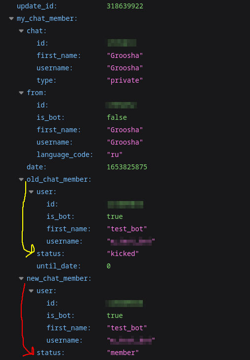
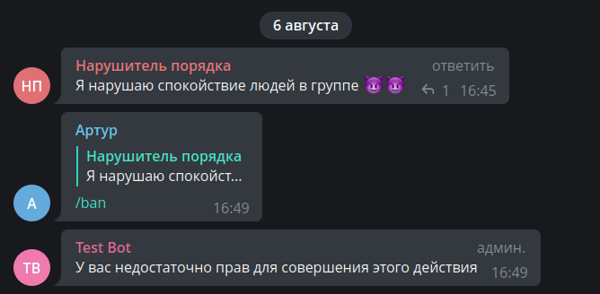

特殊更新¶
使用的 aiogram 版本：3.7.0
介绍¶
Telegram 中几乎所有类型的事件都为用户提供了某种外部表示。服务消息、普通消息、
回调、内联模式...但是有两种特殊的更新事件，它们专门为机器人本身设计。我们将讨论
my_chat_member 和 chat_member
很久以前，群组中的机器人存在于"信息真空"中：对于任何审核操作（如禁言或限制）， 都需要通过 getChatMember 或 getChatAdministrators 方法检查调用者的权限，甚至还要缓存一段时间以避免触及 Bot API 的限制——这些限制的确切值仍然是神秘的。
或者，比如某个狡猾的用户将机器人添加到群组，然后撤销其写入权限，并开始调用命令， 希望机器人不处理这种错误而崩溃。对于私人消息的发送更是如此：不知道机器人的活跃用户具体是谁， 开发者要么必须向数据库中的用户列表发送消息，要么更人性的做法是发送某个 ChatAction， 比如"正在输入..."；但事实证明，屏蔽了机器人的用户根本不会收到这个"正在输入..."， Bot API 会返回一个错误。
2021年3月，Bot API v5.1 更新
的发布从根本上改善了这种情况，其中添加了两种新的更新事件类型：my_chat_member 和 chat_member。
两个更新都包含同一类型的对象：ChatMemberUpdated。
这两个事件之间的区别如下：
my_chat_member。这里包含的是直接关于机器人的所有事情，或者机器人与用户的私人对话： 用户在私人对话中屏蔽/取消屏蔽机器人、将机器人添加到群组或频道、从中移除机器人、 更改机器人权限和在不同聊天中的状态等。chat_member。包含机器人作为管理员所在群组和频道中用户状态的所有更改： 用户进入/离开群组、频道订阅/取消订阅、更改用户权限和状态、 任命/撤销管理员以及许多其他操作。
重要
默认情况下，Telegram 不会向机器人发送 chat_member 更新事件，接收必须单独启用。
详见 相应部分
在本章中，我们将尝试在最常需要的任务中查看这些更新，但在转到下一部分之前， 我强烈建议您查看 aiogram 3.x 文档中的 这个页面。
ChatMemberUpdated 对象¶
ChatMemberUpdated 对象本身值得特别关注。
为了更仔细地研究它，假设在某个群组中，管理员 Alice 禁言了普通成员 Victor。
chat 和 date 字段很直观，我们就跳过它们。
from 字段（在您的 Python 代码中是 from_user）包含操作主体的信息。在我们的例子中，
操作主体是 Alice，因此 from（from_user）将包含带有 Alice 信息的 User 对象。
old_chat_member 和 new_chat_member。这些字段隐藏了操作对象**事件前后**的"状态"。
相应地，old_chat_member 将包含 ChatMemberMember 类型的对象
（这不是打字错误），以及包含 Victor 信息的 user 字段，而 new_chat_member 将包含
ChatMemberBanned 对象，同样包含那个不幸的 Victor 的 user 字段。
最后，如果某个用户（比如 Mary）加入群组或频道，那么在 ChatMemberUpdated 对象中会有一个非空的
invite_link 字段，类型为 ChatInviteLink，
包含有关她通过哪个邀请链接加入的信息。
关于邀请链接
这里需要做一个重要的说明：群组/频道的每个管理员（包括机器人）可以创建多个具有不同参数的邀请链接。
如果机器人"捕获"了通过其[机器人]创建的链接进行的加入，那么 ChatInviteLink 对象中的 invite_link 字段
将显示完整的链接（当然不包括 https://t.me）。但如果参与者通过另一个管理员的链接进入，
机器人将只看到第一部分，第二部分将被替换为省略号。
这很可能是为了防止机器人向某人发送由其他聊天管理员创建的邀请链接。
顺便说一句，由于某种奇怪的 Telegram 逻辑，如果通过邀请链接加入公开群组
（即使不是通过用户名），机器人将看不到链接（获取 None）。Telegram 🤷♂️
my_chat_member 更新¶
私人对话中的屏蔽/取消屏蔽¶
在专业聊天中，经常出现一个问题："如果有人屏蔽了机器人，如何向机器人的用户进行群发？" 当然，第一个也是主要的建议是："创建频道"， 因为频道是告知用户信息的最佳方式。
但如果你仍然决定直接通过机器人向用户进行群发，那么有三种主要方法来更新机器人的活跃用户列表：
- 在群发过程中直接通过捕获发送错误并更新用户数据库。
- 通过定期发送某个 ChatAction， 例如"正在输入"给用户列表。
- 监听 my_chat_member 更新。
现在我们只对第3点感兴趣。我们将学习如何使用 my_chat_member 来确定用户是否屏蔽或取消屏蔽了机器人。
但在尝试 aiogram 的"魔法"之前，让我们了解这些情况在 Bot API 中的样子。
为此，我们停止机器人进程，在 Telegram 中打开与机器人的对话，并依次屏蔽和取消屏蔽，
使用信使 UI 中的选项。然后打开网络浏览器或某个 Insomnia/Postman 工具，
并转到 https://api.telegram.org/bot<TOKEN>/getupdates 链接，以查看尚未处理的消息（JSON 格式）。
所以，当某人屏蔽机器人时会发生什么：

需要注意的几点：
my_chat_member事件发生在用户 Groosha 的私人对话中（chat_id 等于我的 Telegram ID）。- 事件的启动者（主体）也是 Groosha。
- 在
old_chat_member字段中，可以看到操作的对象（机器人）以及机器人在私人对话中的旧状态："member"， 即机器人**未被**用户屏蔽。 new_chat_member中的user内容相同，但状态已经是"kicked"，即在事件**之后**机器人被用户屏蔽。
也就是说，机器人在与 Groosha 的私人对话中的状态从"member"转变为"kicked"。现在让我们看看取消屏蔽后 Telegram 发来的内容：

这个截图与前一个类似，但如果仔细看，可以看到区别：另一个 update_id（增加了1），
而且前后状态互换。机器人在与 Groosha 的私人对话中从"kicked"转变为"member"。
此外，通常还会有另一个类型为 message 的更新，内容是命令 /start。
官方客户端在取消屏蔽机器人时会立即发送 /start 命令，但不应该依赖于此：
此类操作取决于客户端，其行为可能有所不同。
现在让我们学习通过 aiogram 对这些事件做出反应的简单示例：假设我们有一个包含两个活跃机器人用户的列表，
ID 分别为 111 和 222。按 /start 命令将用户添加到群发列表，按 /users 命令输出那些未屏蔽机器人的用户 ID
（换句话说，屏蔽机器人时从列表中删除 ID，取消屏蔽时再次添加）。
这是适合上述条件的现成路由：
from aiogram import F, Router
from aiogram.filters.chat_member_updated import \
ChatMemberUpdatedFilter, MEMBER, KICKED
from aiogram.filters.command import \
CommandStart, Command
from aiogram.types import ChatMemberUpdated, Message
router = Router()
router.my_chat_member.filter(F.chat.type == "private")
router.message.filter(F.chat.type == "private")
# 仅用于示例！
# 在实际应用中使用更可靠的
# 用户 ID 源
users = {111, 222}
@router.my_chat_member(
ChatMemberUpdatedFilter(member_status_changed=KICKED)
)
async def user_blocked_bot(event: ChatMemberUpdated):
users.discard(event.from_user.id)
@router.my_chat_member(
ChatMemberUpdatedFilter(member_status_changed=MEMBER)
)
async def user_unblocked_bot(event: ChatMemberUpdated):
users.add(event.from_user.id)
@router.message(CommandStart())
async def cmd_start(message: Message):
await message.answer("Hello")
users.add(message.from_user.id)
@router.message(Command("users"))
async def cmd_users(message: Message):
await message.answer("\n".join(f"• {user_id}" for user_id in users))
注意：对于 my_chat_member 更新的处理程序，我们使用 ChatMemberUpdatedFilter 过滤器，
指定要捕获的结果**之后**（即更新的 new_chat_member 属性）。
也就是说，在这种情况下，我们不关心用户**之前**处于什么状态。
这是实际效果：
添加到群组¶
初学者开发者的另一个常见问题是："如何捕获机器人被添加到群组的事件？"好吧， 让我们来理解。但首先让我们看看用户可能有的"状态"：
- creator（又称 owner）——聊天的所有者。显然，机器人不能拥有这样的状态。 所有者无条件地拥有聊天中的所有可能权限，除了"匿名"，它可以自由切换。
- administrator——任何其他管理员。在应用程序界面中可以移除他的所有权限， 但他仍然会保持管理员身份，例如可以读取最近的操作并忽略慢速模式。
- member——具有默认权限的聊天参与者。了解这些"默认权限"可以调用 API 方法
getChat 并查看
permissions字段。 - restricted——某些权限受限的用户。例如，处于所谓"只读"状态。
重要：用户在
restricted状态可能在群组中，也可能不在，因此需要检查 ChatMemberRestricted 的is_member标志。 - left——"他飞了，但答应会回来"，
即用户已离开群组，但可以再次进入。退出时，他不处于
restricted状态。 - banned——用户被禁言，在取消禁言之前无法自己返回。
有了以上信息，不难猜测"机器人已被添加到群组"事件是从状态集 {banned, left, restricted(is_member=False)}
转变为 {restricted(is_member=True), member, administrator}。这种转变在英文中称为 transition，
aiogram 3.x 中已经有了相应的设置。
选项 №1：简单地列举所有之前和之后的状态：
# 不要忘记导入：
from aiogram.filters.chat_member_updated import \
ChatMemberUpdatedFilter, KICKED, LEFT, MEMBER, \
RESTRICTED, ADMINISTRATOR, CREATOR
@router.my_chat_member(
ChatMemberUpdatedFilter(
member_status_changed=
(KICKED | LEFT | -RESTRICTED)
>>
(+RESTRICTED | MEMBER | ADMINISTRATOR | CREATOR)
)
)
竖线表示"或"，位运算符">>"显示转变方向，而"加"和"减"符号围绕 RESTRICTED 表示 is_member 标志
（加表示 True，减表示 False）。
但 aiogram 的开发者进一步包装了这两个集合为单独的状态 IS_NOT_MEMBER 和 IS_MEMBER。
简化我们的代码为选项 №2：
# 稍有不同的导入
from aiogram.filters.chat_member_updated import \
ChatMemberUpdatedFilter, IS_NOT_MEMBER, IS_MEMBER
@router.my_chat_member(
ChatMemberUpdatedFilter(
member_status_changed=
IS_NOT_MEMBER >> IS_MEMBER
)
)
但由于这种转变在机器人中使用很频繁，开发者进一步包装了这样的转变为变量 JOIN_TRANSITION，
得到选项 №3：
# 导入更少了
from aiogram.filters.chat_member_updated import \
ChatMemberUpdatedFilter, JOIN_TRANSITION
@router.my_chat_member(
ChatMemberUpdatedFilter(
member_status_changed=JOIN_TRANSITION
)
)
我强烈建议您查阅文档 中的所有状态和转变集，以使您的代码更加整洁。
现在让我们创建另一个路由，它有两个处理程序，分别响应机器人以管理员身份和普通成员身份添加到群组或超级群组。 添加时，我们将向聊天发送有关机器人添加位置的摘要信息：
from aiogram import F, Router
from aiogram.filters.chat_member_updated import \
ChatMemberUpdatedFilter, IS_NOT_MEMBER, MEMBER, ADMINISTRATOR
from aiogram.types import ChatMemberUpdated
router = Router()
router.my_chat_member.filter(F.chat.type.in_({"group", "supergroup"}))
chats_variants = {
"group": "群组",
"supergroup": "超级群组"
}
# 无法重现机器人作为 Restricted 添加的情况，
# 所以没有该示例
@router.my_chat_member(
ChatMemberUpdatedFilter(
member_status_changed=IS_NOT_MEMBER >> ADMINISTRATOR
)
)
async def bot_added_as_admin(event: ChatMemberUpdated):
# 最简单的情况：机器人作为管理员被添加。
# 我们可以轻松发送消息
await event.answer(
text=f"你好！感谢将我添加到 "
f'{chats_variants[event.chat.type]} "{event.chat.title}" '
f"作为管理员。聊天 ID：{event.chat.id}"
)
@router.my_chat_member(
ChatMemberUpdatedFilter(
member_status_changed=IS_NOT_MEMBER >> MEMBER
)
)
async def bot_added_as_member(event: ChatMemberUpdated, bot: Bot):
# 更复杂的情况：机器人作为普通成员被添加。
# 但可能没有写消息的权限，所以我们先检查。
chat_info = await bot.get_chat(event.chat.id)
if chat_info.permissions.can_send_messages:
await event.answer(
text=f"你好！感谢将我添加到 "
f'{chats_variants[event.chat.type]} "{event.chat.title}" '
f"作为普通成员。聊天 ID：{event.chat.id}"
)
else:
print("以某种方式记录这个情况")
但像往常一样，还有一个细节，为了看到它，需要将机器人添加到群组， 然后将其转换为超级群组。为了清晰起见，我创建了一个包含 @my_id_bot 的群组， 然后添加了带有上述代码的测试机器人。注意图片：

哦，为什么机器人看起来像刚被添加，尽管似乎没有任何变化。事实上，对机器人来说，
群组到超级群组的转换看起来像添加到新聊天。幸运的是，在这种情况下，机器人也会收到一条带有
非空 migrate_from_chat_id 和 migrate_to_chat_id 字段的 Message。剩下的就很简单了：
当 my_chat_member 事件在添加到超级群组时触发时，检查最近（比如几秒钟）是否有带有非空 migrate_to_chat_id 字段的消息。
解决方案几乎完全重复了上面描述的示例，甚至在我的 @my_id_bot 中实现： 就像这样 （GitHub 上的星星总是受欢迎的）
群组和超级群组
与普遍的误解相反，普通群组仍然存在，不会消失。Telegram 官方客户端最初创建的是普通群组， 它在发生特定事件时隐式转换为超级群组。有充分的理由相信这种行为在未来几年不会改变， 特别是考虑到普通（非高级）账户在参加超级群组和频道方面有 500 个的限制。
转换时，除了聊天 ID 的更改外，还会产生一些副作用，所以通常最简单的做法是 在创建群组后立即将其转换为超级群组，获取最终 ID 并继续前进。 导致群组到超级群组转换的所有操作的完整列表可在此处查看： https://t.me/tgbeta/3424。
chat_member 更新¶
下一个特殊更新类型 chat_member 很狡猾。问题是它默认不会被 Telegram 发送，
为了让 Bot API 发送它，需要在调用 getUpdates 或 setWebhook 时传递所需事件类型的列表。
例如：
# 这里是导入
async def main():
# 这里是代码
dp = Dispatcher()
bot = Bot("token")
await dp.start_polling(
bot,
allowed_updates=["message", "inline_query", "chat_member"]
)
那么在启动机器人后，Telegram 将开始发送三种指定的事件类型，但不包括所有其他类型。
aiogram 开发者优雅地处理了这个问题：如果没有明确指定 allowed_updates，
框架将递归遍历所有路由（从调度器开始），查看处理程序，并自动收集所需更新类型的列表。
想重写这种行为？显式传递 allowed_updates。
为什么我没有收到
在专业聊天中，人们经常问："我的代码不起作用，不响应事件，为什么？"
首先应该做的是确保所需的更新确实到达机器人。换句话说，检查上次轮询/Webhook 时使用了什么 allowed_updates。
最简单的方法是直接在浏览器中：
- 获取机器人令牌，称其为 AAAAA
- 形成一个像
https://api.telegram.org/botAAAAA/getWebhookInfo这样的链接 - 打开它
然后仔细研究响应中的 JSON。如果 allowed_updates 键存在，确保所需的更新类型在列表中。
如果键不存在，这等同于"发送所有内容，除了 chat_member"
在群组中更新管理员列表¶
机器人审核者的一个常见问题：如何对调用的命令施加访问权限检查。例如， 如何使只有群组管理员才能通过 /ban 命令禁言参与者。
第一个和天真的想法是每次调用 getChatMember 来确定调用者在群组中的状态。 第二个想法是在短时间内缓存这个知识。 第三个和更正确的想法是在机器人启动时获取管理员列表， 然后监听 chat_member 更新以更改其组成，并自己编辑列表。 机器人重启？没关系，再次获取最新列表并使用它。
让我们编写一个路由器，其中将监视管理员组成的更改并更新外部传递的列表 （更准确地说，在 Python 术语中这将是一个集合）：
from aiogram import F, Router
from aiogram.filters.chat_member_updated import \
ChatMemberUpdatedFilter, KICKED, LEFT, \
RESTRICTED, MEMBER, ADMINISTRATOR, CREATOR
from aiogram.types import ChatMemberUpdated
from config_reader import config
router = Router()
router.chat_member.filter(F.chat.id == config.main_chat_id)
@router.chat_member(
ChatMemberUpdatedFilter(
member_status_changed=
(KICKED | LEFT | RESTRICTED | MEMBER)
>>
(ADMINISTRATOR | CREATOR)
)
)
async def admin_promoted(event: ChatMemberUpdated, admins: set[int]):
admins.add(event.new_chat_member.user.id)
await event.answer(
f"{event.new_chat_member.user.first_name} "
f"已被提升为管理员！"
)
@router.chat_member(
ChatMemberUpdatedFilter(
# 注意箭头的方向
# 或者可以交换括号中对象的位置
member_status_changed=
(KICKED | LEFT | RESTRICTED | MEMBER)
<<
(ADMINISTRATOR | CREATOR)
)
)
async def admin_demoted(event: ChatMemberUpdated, admins: set[int]):
admins.discard(event.new_chat_member.user.id)
await event.answer(
f"{event.new_chat_member.user.first_name} "
f"已被降级为普通用户！"
)
现在让我们写另一个路由器，带有 /ban 命令的处理程序。在处理程序中，
我们将检查调用者的 ID 是否在 admins 集合中，并根据此允许或禁止禁言：
from aiogram import Router, F
from aiogram.filters.command import Command
from aiogram.types import Message
router = Router()
# 实际上，你可以在路由器上挂一个自定义过滤器
# 检查调用者的 ID 是否在 admins 集合中。
# 那么路由器中的所有处理程序将自动被调用
# 仅对 admins 中的人员，这将减少代码并避免不必要的 if
# 但为了示例，我们通过 if-else 来使其更清晰
@router.message(Command("ban"), F.reply_to_message)
async def cmd_ban(message: Message, admins: set[int]):
if message.from_user.id not in admins:
await message.answer(
"您没有足够的权限来执行此操作"
)
else:
await message.chat.ban(
user_id=message.reply_to_message.from_user.id
)
await message.answer("违规者已被禁言")
剩下的就是在主文件中注册路由器并在启动时加载管理员列表。 实际上，这是完整的内容，包括所有之前的更改。
import asyncio
import logging
from aiogram import Bot, Dispatcher
from aiogram.client.default import DefaultBotProperties
from aiogram.enums import ParseMode
from config_reader import config
from handlers import in_pm, bot_in_group, admin_changes_in_group, events_in_group
async def main():
logging.basicConfig(
level=logging.INFO,
format="%(asctime)s - %(levelname)s - %(name)s - %(message)s",
)
dp = Dispatcher()
bot = Bot(
config.bot_token.get_secret_value(),
default=DefaultBotProperties(
parse_mode=ParseMode.HTML
)
)
dp.include_routers(
in_pm.router, events_in_group.router,
bot_in_group.router, admin_changes_in_group.router
)
# 加载管理员列表
admins = await bot.get_chat_administrators(config.main_chat_id)
admin_ids = {admin.user.id for admin in admins}
await dp.start_polling(bot, admins=admin_ids)
if __name__ == '__main__':
asyncio.run(main())
现在让我们看看最终的结果。尝试以非管理员身份调用 /ban 命令：

进入群组设置并将 Arthur 指定为管理员（机器人将看到更改并在聊天中报告）：

撤销测试对象的管理员权限，并要求其再次调用 /ban 命令：

现在你知道如何处理这些"无形"的更新，万岁！最后，我建议查看 另一个演示机器人， 其中使用了一些上述功能。